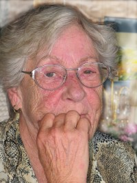

Halvor Stene
M, #2008, f. 1 september 1916, d. 15 juni 1988
Foreldre
Biografi
Halvor Stene ble født den 1 september 1916 på/i Beitstad, Steinkjer, Nord-Trøndelag. Han døde den 15 juni 1988. Han ble gravlagt den 21 juni 1988 på/i Beitstad kirkegård, Steinkjer, Nord-Trøndelag.
Halvor Stene kjøpte i 1943 Sletvoll lille 62/7, Endreberg, Beitstad, Nord-Trøndelag.
| Sist redigert |
15 mai 2016 00:00:00 |
| Slektskap | 4-menning 1 gang forskjøvet til Håkon Wahl |
Erling Torvald Stene
M, #2009, f. 20 april 1918, d. 5 mars 1994
Foreldre
Familie: Solfrid Reinsberg (f. 22 mars 1928, d. 14 februar 2017)
| Sønn | Bjørn Tore Stene+ |
| Datter | Tove Synnøve Stene+ |
| Sønn | Kjell Stene |
Biografi
Erling Torvald Stene ble født den 20 april 1918 på/i Beitstad, Steinkjer, Nord-Trøndelag. Han giftet seg med
Solfrid Reinsberg den 14 juli 1945. Han døde den 5 mars 1994. Han ble gravlagt den 10 mars 1994 på/i Beitstad kirkegård, Steinkjer, Nord-Trøndelag.
Erling Torvald Stene kjøpte i 1947 Bjørnstad 62/8, Endreberg, Beitstad, Nord-Trøndelag.
| Sist redigert |
15 mai 2016 00:00:00 |
| Slektskap | 4-menning 1 gang forskjøvet til Håkon Wahl |
Solfrid Reinsberg
K, #2010, f. 22 mars 1928, d. 14 februar 2017
Foreldre
Familie: Erling Torvald Stene (f. 20 april 1918, d. 5 mars 1994)
| Sønn | Bjørn Tore Stene+ |
| Datter | Tove Synnøve Stene+ |
| Sønn | Kjell Stene |
Biografi
Solfrid Reinsberg ble født den 22 mars 1928 på/i Verdal, Nord-Trøndelag. Hun giftet seg med
Erling Torvald Stene den 14 juli 1945. Hun døde den 14 februar 2017 på/i Steinkjer, Nord-Trøndelag. Hun ble gravlagt den 24 februar 2017 på/i Beitstad kirkegård, Steinkjer, Nord-Trøndelag.
Solfrid Reinsberg was also known as Solfrid Stene.
| Sist redigert |
18 mars 2022 00:00:00 |
Jens Christoffersen
M, #2015, f. før 1847
Biografi
| Sist redigert |
10 november 2010 00:00:00 |
Ole Eriksen
M, #2016, f. før 1847
Biografi
| Sist redigert |
10 november 2010 00:00:00 |
Ole Pettersen
M, #2017, f. før 1839
Biografi
Ole Pettersen ble født før 1839.
| Sist redigert |
10 november 2010 00:00:00 |
Mathias Olsen
M, #2018
Biografi
| Sist redigert |
10 november 2010 00:00:00 |
Anne Gulbrandsdatter
K, #2019, f. før 1849
Biografi
Anne Gulbrandsdatter ble født før 1849. Hun giftet seg med
Ole Eriksen.
| Sist redigert |
10 november 2010 00:00:00 |
Karen Pedersdatter
K, #2020, f. før 1847
Biografi
| Sist redigert |
10 november 2010 00:00:00 |
Berthe Christine Hansdatter
K, #2021, f. før 1841
Biografi
Berthe Christine Hansdatter ble født før 1841. Hun giftet seg med
Mathias Olsen.
| Sist redigert |
10 november 2010 00:00:00 |
Kåre Martinsen
M, #2022, f. 3 mai 1929, d. 1 mai 2007
Biografi
Kåre Martinsen ble født den 3 mai 1929 på/i Lierskogen, Lier, Buskerud. Han giftet seg med
Agnes Hamremoen den 15 mai 1954 på/i Heggen kirke, Modum, Buskerud. Han døde den 1 mai 2007. Han ble gravlagt på/i Frogner kirke, Lier, Buskerud.
| Sist redigert |
10 november 2010 00:00:00 |
Agnes Hamremoen
K, #2023, f. 22 april 1930, d. 2015

Agnes Martinsen
Biografi
Agnes Hamremoen ble født den 22 april 1930 på/i Modum, Buskerud. Hun giftet seg med
Kåre Martinsen den 15 mai 1954 på/i Heggen kirke, Modum, Buskerud. Hun døde i 2015.
Agnes Hamremoen was also known as Agnes Martinsen.
| Sist redigert |
15 mars 2017 00:00:00 |
{kind=link}